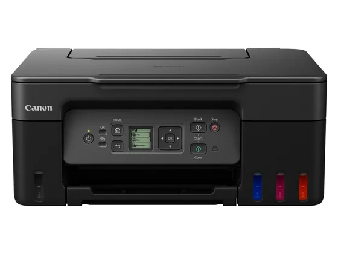
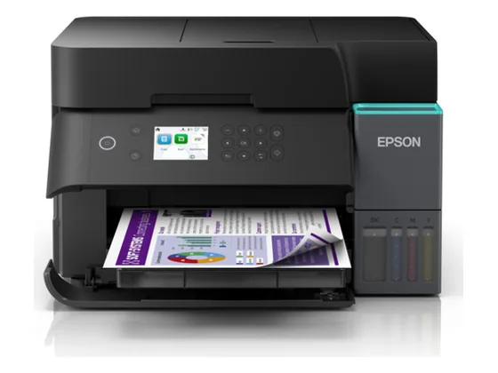
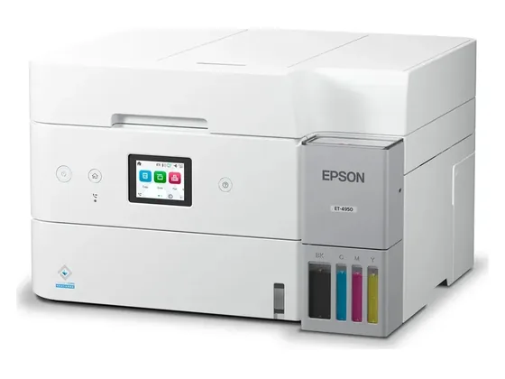
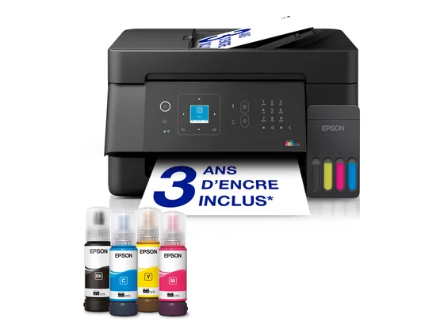
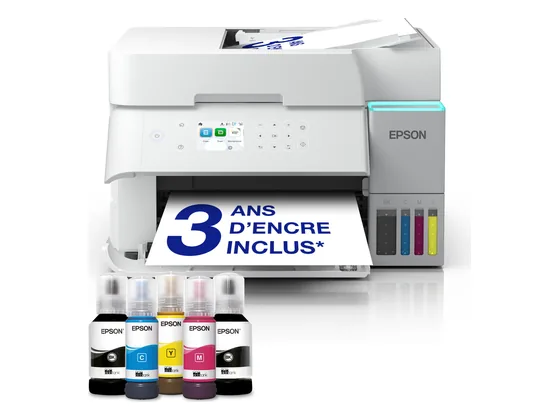
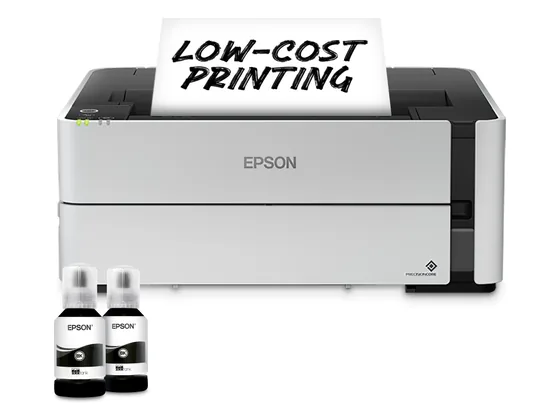

#1notre choixLe choix de la bande
Multifonction A4 · réservoirs · Wi-Fi
La porte d'entrée des réservoirs d'encre : on imprime des milliers de pages avec l'encre fournie, pour un coût à la page dérisoire. Lente et sans recto-verso automatique.
8,0/103 notes presse · gamme
env. 170 €prix indicatif#2sur 10La valeur sûre
Multifonction A4 · réservoirs · fax
La version 4-en-1 de la gamme ET-4850, très bien notée par la presse : documents de grande qualité, rendement de pages exceptionnel, photos un peu ternes.
8,0/105 notes presse · gamme
env. 490 €prix indicatif#3sur 10La version blanche
Multifonction A4 · réservoirs · Wi-Fi
La déclinaison de la gamme ET-2850 : mêmes atouts (coût à la page très bas, encre pour des milliers de pages) et mêmes limites (lenteur, petit écran).
7,6/105 notes presse · gamme
env. 290 €prix indicatif#4sur 10L'alternative Canon

Multifonction A4 · réservoirs MegaTank · Wi-Fi
La MegaTank compacte de Canon : coût à la page très bas, encres pigment/colorant pour des textes nets et des photos correctes.
Testé3 tests, sans note chiffrée
env. 260 €prix indicatif#5sur 10Le télétravail

Multifonction A4 · réservoirs · recto-verso
Une EcoTank plus rapide avec recto-verso automatique et chargeur de documents : la bonne imprimante pour le télétravail, à l'encre très bon marché.
Testé3 tests, sans note chiffrée
env. 300 €prix indicatif#6sur 10Le plus complet

Multifonction A4 · réservoirs · recto-verso · Ethernet
Une EcoTank très équipée (recto-verso, chargeur, Ethernet, écran tactile) qui imprime des milliers de pages. TechRadar la juge imbattable à ce prix.
Testé3 tests, sans note chiffrée
env. 350 €prix indicatif#7sur 10Le recto-verso abordable
Multifonction A4 · réservoirs · Wi-Fi
Une EcoTank d'entrée de gamme plus récente, testée en laboratoire par Test-Achats et Que Choisir : l'économie des réservoirs dans un format compact.
Testé2 tests, sans note chiffrée
env. 240 €prix indicatif#8sur 10Le petit bureau

Multifonction A4 · réservoirs · fax · Ethernet
Une EcoTank 4-en-1 avec fax, Ethernet et chargeur de documents : une vraie imprimante de petit bureau, au coût à la page minimal.
Testé2 tests, sans note chiffrée
env. 310 €prix indicatif#9sur 10La variante télétravail

Multifonction A4 · réservoirs · recto-verso
Variante de l'ET-3950 testée à part par Test-Achats : recto-verso automatique, chargeur de documents et encre pour des milliers de pages.
Testé1 test, sans note chiffrée
env. 280 €prix indicatif#10sur 10Le noir et blanc à réservoir

Monochrome A4 · réservoir · recto-verso
Une imprimante noir et blanc à réservoir d'encre : la rapidité et le recto-verso d'une laser, avec un coût à la page encore plus bas.
Testé1 test, sans note chiffrée
env. 480 €prix indicatif